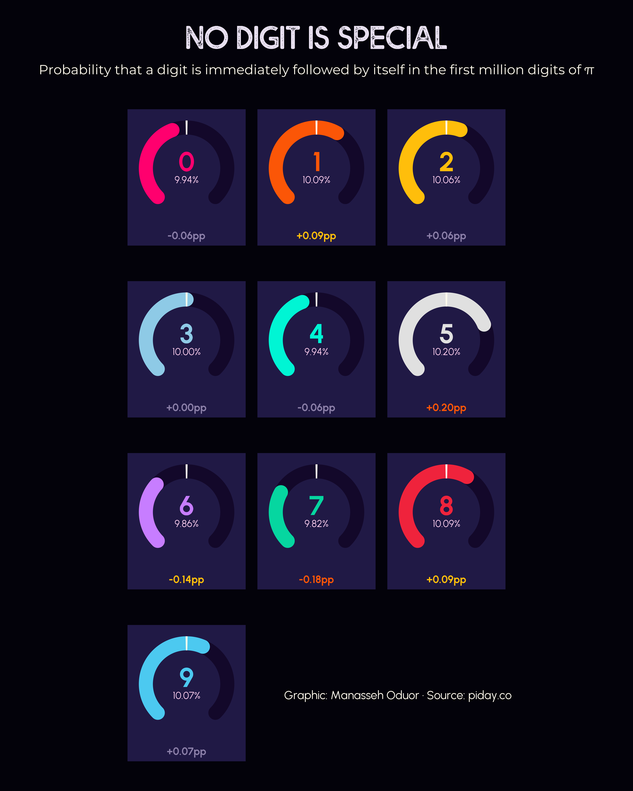
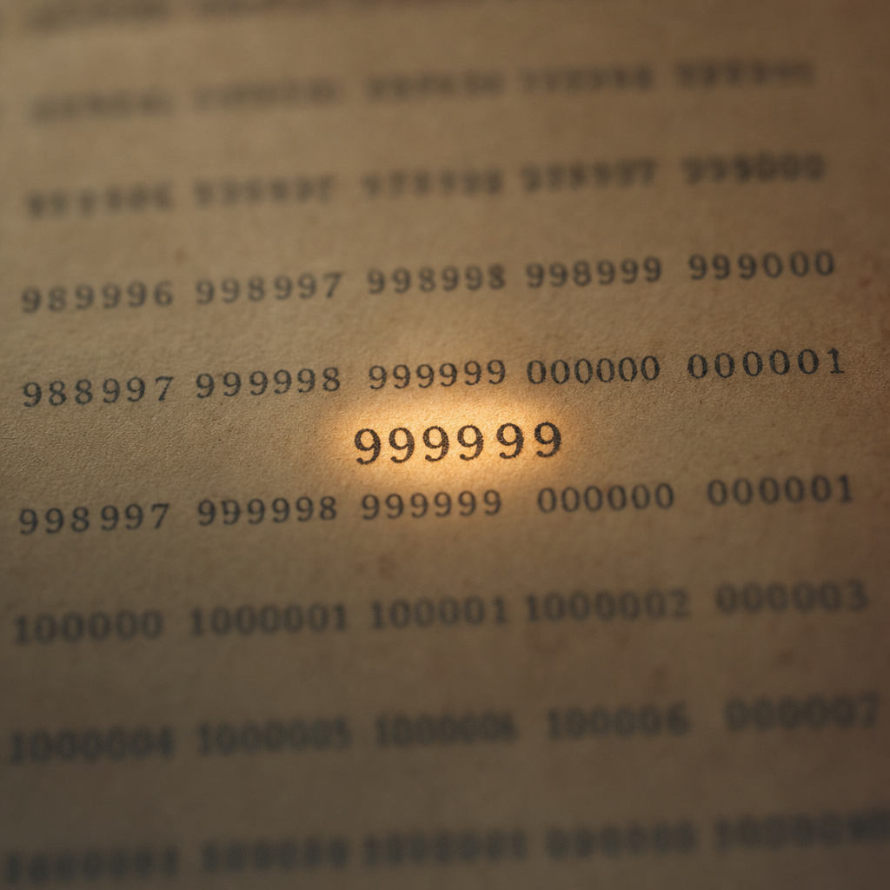

A million digits, ten outcomes, two chi-squared tests, and one famous misbehavior at decimal place 762.
Across the first 1,000,001 digits of π, every digit 0–9 appears between 99,548 and 100,359 times. The expected count is 100,000.1. A chi-squared test against the uniform distribution returns p = 0.7874 — meaning a fair ten-sided die would have produced a less even result about 79% of the time. The most-frequent digit is 5; the least-frequent is 6; the gap between them is 811.
These are the digits of a number we know exactly. π is provably irrational (Lambert, 1768) and provably transcendental (Lindemann, 1882). Its expansion is fixed for all eternity, computable to the 100-trillionth place if you have time and CPUs. And yet the first million of those digits look exactly like the output of a perfectly fair random number generator.
That tension — total determinism, total apparent randomness — is what mathematicians call the normality conjecture: the unproved claim that every digit, every pair, every triple, every length-k pattern in π appears with frequency 10−k in the limit. No one has proven π is normal. No one has proven any naturally occurring constant is normal in any base. We just keep counting digits and finding nothing.
One way to look for hidden structure is to ask: given that we just saw digit i, how often is the next digit also i? If π behaves like fair dice, this “self-transition rate” should be 10% for every digit. The largest is 5 → 5 at 10.195%; the smallest is 7 → 7 at 9.821%. Every diagonal entry sits within ±0.20 percentage points of the 10% target — the binomial 95% CI half-width for ~100k trials is ±0.19pp.
The original TidyTuesday hero figure shows exactly this: ten gauge dials, one per digit, all hovering around 10%. Stare at it as long as you like — there's no sticky digit, no avoidant digit, no detectable autocorrelation at lag 1.

Push the test one step further. Compute every conditional probability P(next = j | current = i) — a 10×10 matrix of 100 numbers. The full chi-squared on length-2 strings: 94.21 with 99 degrees of freedom, p = 0.617. Critical value at α = 0.05 is 123.23. Once again: the data fails to reject independence with room to spare.
The single most-frequent two-digit transition is "94" with 10,239 occurrences (1.0239%). The least-frequent is "12" at 9,721 (0.9721%). The full range across all 100 transitions is just 518 counts. As a heatmap, the matrix is visually a flat sheet of pale color. That's the result.
Most quantitative findings are interesting because they are uneven. This one is interesting because it isn't. We tested for hidden structure twice and found two beautifully featureless surfaces.
Now look at runs — consecutive identical digits. The first three-in-a-row in π is "111" at decimal place 153. The first four-in-a-row is "9999". The first five-in-a-row is "99999". The first six-in-a-row is "999999". All three records arrive in one place — decimal place 762 — and the digit setting them is 9. This is the famous Feynman point.

Six 9's appearing this early would happen for a uniformly random sequence about 0.08% of the time. The earliest written reference to the joke is Douglas Hofstadter's Metamagical Themas (1985); the popular attribution to Richard Feynman has never been confirmed in his memoirs or by his biographer.
The Feynman point is also the only place in the first million digits where π looks weird. Digit 3 catches up later — seven 3's in a row starting at decimal 710,100 — but by then the dataset has long since proven the rule that π is, in every other respect, extremely well-behaved.
If π contains every possible string somewhere — and most mathematicians believe it does — what about "0123456789"? In the first million digits the answer is: it's not there. Neither is "9876543210", "123456", "123456789", or even "000000". But we do find "42" at decimal 92, "666" at 2,440, "0000" at 13,390, "1234" at 13,807, the leading digits of e (271828) at 33,789, and π reading itself ("314159") at 176,451.
The textbook answer for "0123456789" is decimal place 17,387,594,880 — about 17.4 billion in. That's roughly 17,400 times deeper than this dataset. So the absence isn't a failure of π; it's a feature of one million — long enough for cute coincidences, far too short for orderly long strings.
| String | What it is | First decimal place |
|---|---|---|
42 | the answer to everything | 92 |
666 | "the beast" | 2,440 |
999999 | the Feynman point | 762 |
1234 | four ascending | 13,807 |
0000 | four zeros | 13,390 |
271828 | first 6 digits of e | 33,789 |
314159 | π reading itself | 176,451 |
888888 | six 8s | 222,299 |
000000 | six 0s | not in first 1M |
123456 | six ascending | not in first 1M |
9876543210 | ten descending | not in first 1M |
123456789 | nine ascending | not in first 1M |
0123456789 | ten ascending | first appears at digit 17,387,594,880 (≈17.4 billion) |
The "your birthday is in π" parlor trick works ~63% of the time at this depth: 631,548 of all 1,000,000 possible 6-digit strings actually appear in the first million decimals. Length-5 coverage is 99.99% (8 missing out of 100,000). Length-7 coverage drops to 9.5%. The boundary at length 6 is exactly where probability theory predicts.
At n = 10 digits, three of the ten possible digits haven't appeared at all and three others appear twice their share. By n = 100 the spread is ±4 percentage points. By n = 10,000 it's about ±0.5pp. By n = 1,000,000 every digit's running rate sits within ±0.05pp of 10%. This is exactly the 1/√n behavior the Central Limit Theorem promises.
Define "settled" as the smallest n at which a digit's running percentage stays inside [9.9%, 10.1%] forever. Digit 0 settles first, at n = 25,991. The slowest is digit 7, at n = 368,515. By the time we hit 369k digits, all ten have permanently joined the ±0.1pp club.
NASA's JPL navigates spacecraft using 15 digits of π. Forty digits would compute the circumference of the observable universe to within the width of a hydrogen atom. We have a million.
What that million can do: confirm uniformity at p ≈ 0.79, confirm pairwise independence at p ≈ 0.62, surface every length-5 substring (99.99% coverage), find the Feynman point at decimal 762, and watch each digit's running frequency converge to 10% on a 1/√n schedule. What it cannot do: prove π is normal, find runs of seven or more identical digits other than the one stray "3333333", or fit "0123456789".
π is a number we know exactly. Its digits behave as if we don't. That's the whole story — and the unsolved problem at the center of it is older than any of us, and probably will outlive most of what we'll ever write.